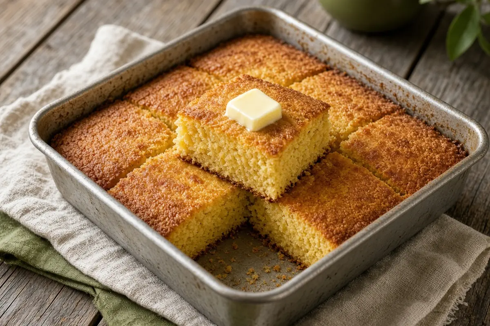

Grandmother's Cornbread
Jiffy mix made richer and sturdier with mayonnaise, eggs, oil, and a little sugar. A thick, moist pan of cornbread that holds up to a bowl of beans.

Adapted from Food.com
6 servings
By
Yield: 6 servings
Prep:
Cook:
Total:
Difficulty: Easy
Ingredients
- 1 (8-oz) box Jiffy cornbread mix
- 1/2 cup mayonnaise
- 2 eggs
- 1/4 cup oil
- 2 Tbsp sugar
Instructions
- Heat the oven to 350°F and grease an 8 x 8-inch baking dish.
- Put the cornbread mix in a bowl, add the eggs and oil, then the mayonnaise and sugar.
- Stir well; the batter will be thick. Spread it in the baking dish.
- Bake 30 minutes, until golden and a toothpick comes out clean.
Notes: Some ovens take up to 45 minutes; start checking at 30. Bake it in a buttered cast-iron skillet for crispier edges. Made for Crockpot Pinto Beans.